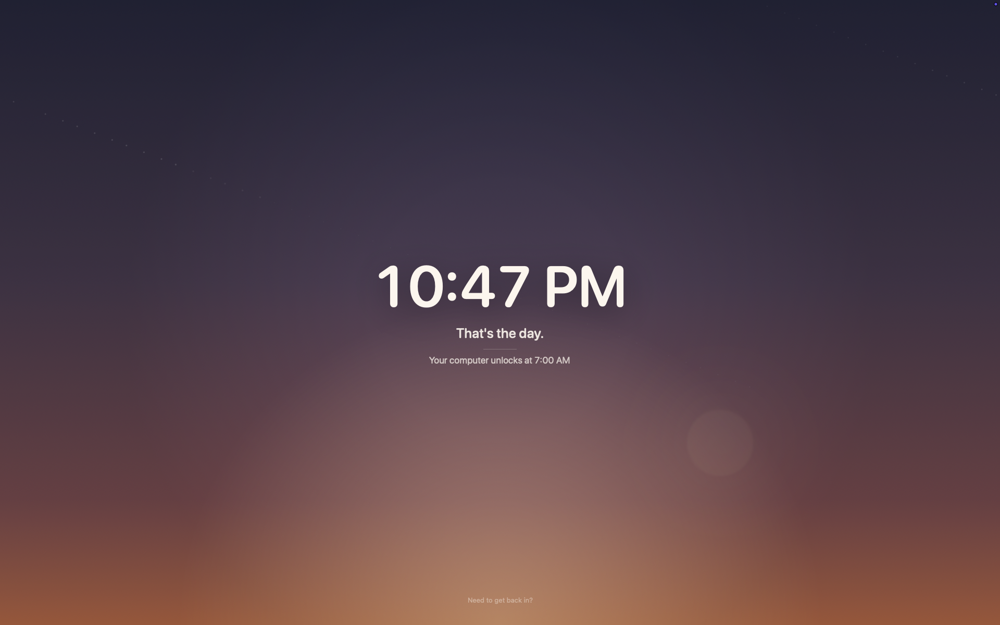
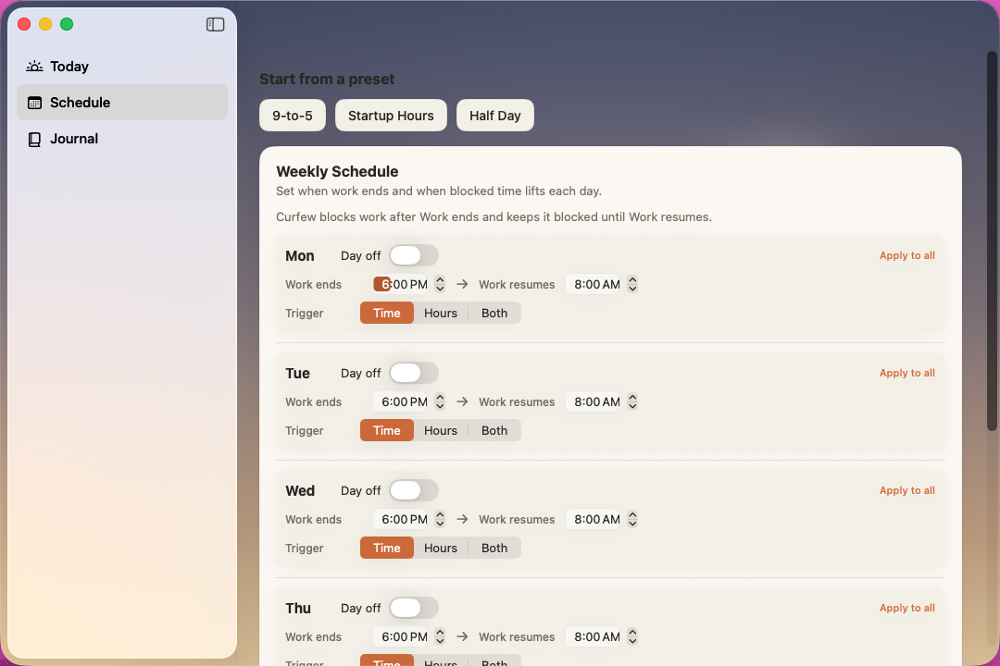
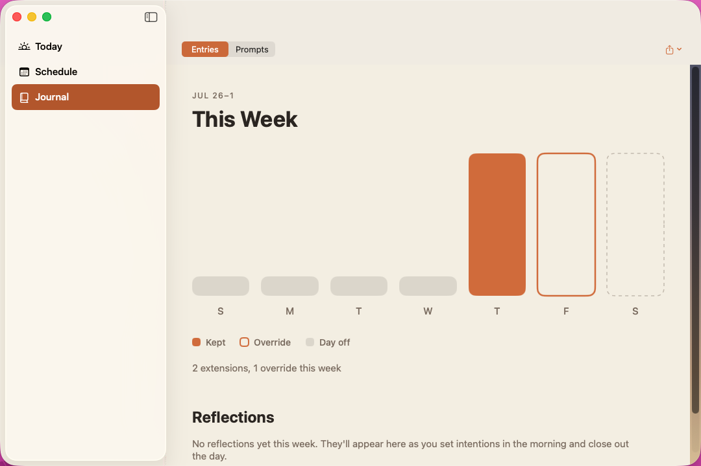

End the workday.
Set your work hours. Curfew counts down when the day is over, then shows a full-screen lockout. Automatic shutdown is optional.

What it looks like
Set a different end time for each day, then see the week as it went.


When work ends.
Set your hours
Choose start and stop times for each day, days off, or an hours-based schedule. Last-minute schedule changes do not quietly move today's finish line.
Get a heads-up
Curfew warns you at 30, 15, 5, 2, and 1 minutes.
Call it a night
At curfew, a full-screen lockout appears. Automatic shutdown is optional.
Need more time? Write a reason, wait five minutes, then confirm. Extension and override limits are shown in the menu bar.
Curfew is not a security system. A terminal, another account, or a reboot can bypass it. It adds a pause before you decide to keep working.
Check in before and after work.
Choose the questions. Curfew asks them when you start work and when curfew begins. Answer or skip them.
Start with a question
Use a short prompt, rating, or mood check when you begin.
Wrap up
At curfew, note what happened today or what needs to wait until tomorrow.
Keep the record
Your journal keeps entries and ratings together. Export Markdown or JSON whenever you want.
Questions and answer types are editable in Settings. Your entries stay on your Mac.
Connect Curfew to a local assistant.
Curfew includes a local MCP server. A compatible assistant can read your Curfew status and reflections. Requests that change Curfew wait for approval in the app.
Read the docsCurfew for macOS
Requires macOS 26 or later.
Private by default. No telemetry. Local MCP access stays under your control.